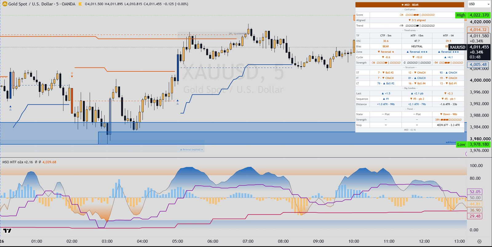

Indicators / MSO MTF
Multi-timeframe structureMSO MTF v2.16
Turns market structure into a 0-100 oscillator: for short-, intermediate- and long-term swing structure it measures where the close sits in the range since the last structure break, and blends the three with weights. It runs the same engine on the chart timeframe and two higher timeframes (default 15 and 60 minutes), draws break-of-structure / change-of-character lines, overbought / oversold reversal zones, big 'displacement' candles and a big-candle trend tracker, and a dashboard combines the timeframes into one confluence score.

What it draws
- Oscillator pane: chart-timeframe oscillator with gradient colour, overbought (85) / oversold (15) shading, 50 line and bullish / bearish gradient fills
- Oscillator pane: cycle histogram (oscillator minus its EMA, centred on 50), optional ST / IT / LT component lines, MTF and HTF oscillator lines
- Price chart: BoS / CHoCH lines (and optional labels) for short, intermediate and long-term structure per timeframe
- Price chart: overbought / oversold reversal zones with stage (armed, exhaustion, reversal, invalidated grey, expired faded) and ★ grade
- Price chart: big candles - chart-TF bars coloured, MTF / HTF candles drawn over their chart bars (Candle, Heikin Ashi or Momentum HA), optional labels with size and sequence number
- Price chart: trend-tracker stop lines, mid lines, start markers and optional background per timeframe
- Optional cross dots: ⦁ oscillator / cycle 50-crosses, ◆ MTF and ■ HTF oscillator 50-crosses
- Dashboard (price chart or pane): confluence score with gauge and TF alignment; per-TF oscillator, bias, cycle, strength; structure; big candles; trend; optional pivot settings
Signals
- Structure break: BoS / CHoCH
- For each term (short, intermediate, long) on each timeframe: a bullish break when the close goes above the last swing high (once per swing), a bearish break when the close goes below the last swing low. It is a CHoCH (change of character) when it breaks against the previous trend of that term, otherwise a BoS (break of structure, numbered). Short-term swings come from the pivot engine (Bars, ATR Reversal or Bars + ATR); intermediate-term swings are built from short-term swing peaks / troughs, and long-term from intermediate.
- Reversal zone (OB / OS)
- Stage 1 armed: the oscillator enters overbought (≥ 85) or oversold (≤ 15); the zone follows the extreme high (low), depth = Depth x ATR. Stage 2 exhaustion: the oscillator leaves the zone while the cycle has turned against the move; the zone freezes. Stage 3 reversal: a short-term CHoCH against the move (can skip stage 2). Invalidated: a close beyond the frozen extreme. Expired: older than Zone Lifetime (150 TF bars). ★ grade = how many of CTF / MTF / HTF were overbought (oversold) together while the zone was armed.
- Big candle
- Body ≥ 1.5 x ATR (default mode; or range ≥ 2.0 x ATR, or body ≥ 2.5 x average body of 20 candles), and body at least 60% of the candle range. Same-direction big candles count up a sequence; an opposite big candle flips the sequence only if it closes beyond the reference candle's low (high) by default, otherwise it is marked as a pullback.
- Trend Tracker start / stop
- A big candle starts a trend in its direction with a stop at the candle low (high) minus (plus) 3 x ATR. The stop only moves with the trend; a close through it ends the trend (Flat). An opposite big candle flips the trend unless it is only a pullback (Ignore Pullbacks on).
- Oscillator 50 crosses (optional dots)
- The chart-TF oscillator, the cycle, the MTF oscillator or the HTF oscillator changes side of 50.
- Confluence state
- TF Strength = average of (oscillator - 50) x 2 and the weighted ST / IT / LT trend score x 100. Confluence = weighted average of CTF / MTF / HTF strength (weights 1 / 2 / 3). Strong Bull ≥ 50, Bull ≥ 20, Bear ≤ -20, Strong Bear ≤ -50, otherwise Neutral.
Main settings
| Setting | Default | What it does |
|---|---|---|
| Term Weights ST / IT / LT | 1 / 3 / 2 | Weight of each structure term in the oscillator. |
| Oscillator Smoothing / Cycle Length | 4 / 7 | SMA smoothing of the oscillator; EMA length used for the cycle histogram. |
| MTF / HTF Values | Confirmed (no repaint) | Confirmed updates higher-TF values only when their candle closes; Live follows the forming candle and repaints. |
| MTF TF / HTF TF | 15 / 60 | The two higher timeframes (must be at or above the chart timeframe, otherwise the chart timeframe is used, marked *). |
| Pivots Mode / L / R (per TF) | Bars / 1 / 1 | How short-term swings are found: bar-count pivots, ATR reversal (Reversal x 2.0 ATR), or bars plus a minimum leg (Min Leg x 1.0 ATR). |
| Overbought ≥ / Oversold ≤ | 85 / 15 | Levels for shading, dashboard tags and reversal zones. |
| Zone Lifetime (TF bars) / Depth x ATR | 150 / 0.5 | How long a reversal zone stays active and how deep it is. |
| Big Candles Mode and multipliers | Body x ATR 1.5 (Range x ATR 2.0, Body x Avg 2.5, Avg Len 20, Min Body 60%) | What counts as a big candle on each TF. |
| Trend Tracker Trail x ATR / Ignore Pullbacks | 3.0 / on | Trailing-stop distance of the big-candle trend and whether pullback candles can flip it. |
| TF Weights CTF / MTF / HTF and Bias / Strong | 1 / 2 / 3 and 20 / 50 | How the confluence score combines timeframes and where Bull / Strong Bull begin. |
Timeframes
Three engines: the chart timeframe (CTF), a mid timeframe (MTF, default 15) and a higher timeframe (HTF, default 60), each with its own pivot, zone, big-candle and trend settings. Higher timeframes below the chart timeframe fall back to the chart timeframe.
Alerts
Pine: six alertcondition() entries - Confluence → Strong Bull, Confluence → Strong Bear, Zone reversal ▲ (from oversold), Zone reversal ▼ (from overbought), Trend ▲ start (any TF), Trend ▼ start (any TF). Plus one alert() call per bar at bar close that bundles every enabled event (structure breaks for chosen terms, reversal-zone stages, trend start/stop, strong confluence, optionally big candles and oscillator 50-crosses) per enabled timeframe. MT5: the chart indicator can raise a popup Alert() with the same per-bar message on bar close (off by default).
Closed candles and repainting
- Default 'Confirmed (no repaint)': MTF / HTF values come from request.security with lookahead_on on the previous (closed) higher-TF bar, so they change only when that candle closes.
- 'Live (repaints)': higher-TF values follow the forming candle and can change until it closes; the source notes a break undone and re-made inside the same candle can draw / alert twice.
- The bundled alert() fires once per bar close (alert.freq_once_per_bar_close). Chart-TF structure lines and markers are evaluated on every bar, so on the live bar they can still change before it closes.
- Short-term pivots are confirmed R bars later (Bars mode) or after an ATR reversal, which can take long in one-way moves.